Type II Supernovae#
Type II core-collapse supernovae (CCSNe) are the explosions of massive stars that retained at least part of their hydrogen envelope. Type IIP events are the explosions of hydrogen-rich stars: an early cooling-phase decline (from the initial shock breakout) settles onto a weeks-to-months-long luminosity “plateau” as a recombination front recedes through the ejecta, followed by a radioactive tail powered by \(^{56}\mathrm{Co}\) decay. A subset show a brighter, hotter, faster early excess on top of this, attributed to shock breakout through and/or collisional heating of close circumstellar material – IXF/GGI-like objects, after the prototypes SN 2023ixf and SN 2024ggi. The ordinary IIP model is a cut-off power-law shock-cooling decline, a plateau and a radioactive tail; the excess variant instead keeps an earlier two-exponential light curve with a logistic rise, and a photospheric temperature with an additional early reheating bump. Both have a line-blanketed blackbody photosphere, calibrated against Swift/UVOT UVW1 and UVW2 light curves. Type IIb events, which lost most but not all of their hydrogen, are modeled as the sum of a shock cooling flash and a radioactively powered main peak. Each is implemented as its own transient population in a tab below. (Hydrogen-free Type Ib and Ic supernovae are covered on the Type I page.)
Implemented by TypeIIPSNe, pairing
TypeIIPSED with the rate/duration metadata
described below.
Quick Facts
Quantity |
Value |
Source |
Notes |
|---|---|---|---|
Rate |
\(R_\mathrm{CC}(z) = k\,\psi_\mathrm{UV}(z)\); Type IIP 48.7% of \(R_\mathrm{CC}(z)\) |
Strolger et al.[1], Madau and Dickinson[2], Li et al.[3], Shivvers et al.[4] |
Tracks the cosmic star-formation history. Li et al.[3] find II-P is
\(69.9^{+5.1}_{-5.8}\%\) of the Type II rate, which is itself
\(69.6\pm6.7\%\) of the total core-collapse rate [4], so
the Type IIP fraction of the CC rate is \(0.699\times0.696=0.487\). This chain,
combined in quadrature with the \(+27\%/-31\%\) uncertainty on
Strolger et al.[1]’s \(k\), gives
|
Redshift limit |
\(z = 0.50\) |
– |
Redshift beyond which, with 95% confidence, at most 1% of events drawn from the SED’s priors are brighter than 24.5 AB (the UVEX 1 Dwell limit) in either UVEX band, rounded up. See the observability summary below. |
Duration |
100 days |
– |
Covers the plateau and the transition to the (unmodeled) nebular phase. |
SED Model
TypeIIPSED is a cut-off power-law shock-cooling
decline, a hydrogen-recombination plateau and a radioactive tail, with a cooling, line-blanketed
blackbody photosphere:
with the plateau-end switch
The first term is the shock-cooling decline of the extended envelope: a power law in time, cut off exponentially once the emission comes from deeper in the envelope and hydrogen starts to recombine. The cutoff has to sit inside this term, because adding a constant plateau to a bare power law can only make the curve flatter. The second term is the hydrogen-recombination plateau at \(L_p\), and \(S_P\) turns it off, and the radioactive tail on, at the plateau-end epoch \(t_P\). The tail is a pure \(^{56}\mathrm{Co}\) exponential from \(L_\mathrm{Co}\) at \(t_P\).
There is no rise: the bolometric luminosity is largest at the earliest times, as it is for most of the SNe II in the calibration sample. The power law is evaluated no earlier than \(0.1\ \mathrm{d}\), and \(L_\mathrm{bol}\) is zero before explosion. The planar shock-breakout phase, \(L\propto t^{-4/3}\) for the first few hours, is not modeled.
The photospheric temperature falls from a hot start to a cool floor as a logistic in \(\ln t\):
It sits near \(T_0\) until a fraction of \(t_T\), is halfway to the floor at \(t_T\), and falls as \(t^{-k_T}\) afterwards. \(T_0\) is set by expectation rather than by data: the shock-heated photosphere is expected to start at \(\sim5\times10^4\) K or hotter, and the prior is centered on the cooler end of that. The transition epoch (\(\sim6\) d) and steepness are tied to the Swift/UVOT UVW1 light curves, which put the photosphere at \(\sim10^4\) K by \(\sim10\)-\(15\) d.
A plain blackbody does not describe the UV of a Type II SN well. Line blanketing makes the UV fainter
than a blackbody at the optical temperature, and the photosphere here is therefore line-blanketed in the
same way as the Type Ia SED (see its SED Model section for the form of the
suppression): the UV blueward of \(\nu_\mathrm{break}\) falls as \(\nu^{-\beta}\), and the shape
is divided by its integral at each epoch, so that \(L_\mathrm{bol}(t)\) is unchanged and the flux
removed from the UV is returned redward of the break. break_frequency (\(0.75\times10^{15}\)
Hz) and beta (5) are fixed at the Type Ia values.
The temperature is a compromise between the UV and the optical data, and not a fit to the optical
temperatures. T_floor, t_T and k_T were fit against the Swift/UVOT UVW1 light curves of
the Type IIP SNe in test_data/transients (epochs from 2 to 50 d), with T0 held at its prior and
the optical temperatures of SN 1999em, SN 2003hn, SN 2012aw, SN 2012A and SN 2008in weighted down. The
UVOT light curves are mostly timed from discovery rather than explosion, which the calibration treats
as a random 0 to 5 d lag. That fit predates the line blanketing. After it was added, T_floor was
raised by hand to \(10^{3.74}\ \mathrm{K}\) (about 5500 K, close to the hydrogen-recombination
temperature) and k_T lowered to between 1.5 and 2.0, giving a warmer, smoother cooling transition
than the fit alone.
Parameter priors
The light-curve priors come from fitting the bolometric form above to each curve in the Type IIP
calibration set (the curves of Dall’Ora et al.[5], Faran et al.[6],
Bersten and Hamuy[7] and the 35 comparison SNe II of Jacobson-Galán et al.[8]), keeping
the 28 with a resolved plateau drop and a good fit, and then adjusting the prior widths until the
prior-predictive spread of \(L_\mathrm{bol}\) matched the observed spread at epochs from 2 to
280 d. tau_drop is the median of the per-object fits. The fits prefer \(\alpha\simeq0\) for
most objects (a plain exponential decline with \(t_c\sim14\) d), so alpha is only bounded to
\([0, 0.35]\). L_1 is a truncated normal, limited to the range of the fitted values, which
keeps the bright tail of the population within what is observed. The priors are independent,
although in the data \(L_1\) and \(L_p\) are correlated, so the population is somewhat broader
than the observed one at fixed epoch pairs. The temperature-law and line-blanketing priors are
described above.
Parameter |
Symbol |
Prior |
Notes |
|---|---|---|---|
|
\(L_1\) |
TruncatedNormal(\(\log_{10}(L_1/\mathrm{erg\,s^{-1}})\); mean=42.45, \(\sigma\)=1.1, bounds 41.3 to 43.5) |
Shock-cooling luminosity scale: the power law’s value at 1 d, before the cutoff. |
|
\(\alpha\) |
Uniform(0, 0.35) |
Shock-cooling power-law decay index. |
|
\(t_c\) |
Uniform(9 d, 13 d) |
Exponential cutoff time of the shock-cooling decline. |
|
\(L_p\) |
Normal(\(\log_{10}(L_p/\mathrm{erg\,s^{-1}})\); mean=41.76, \(\sigma\)=0.35) |
Plateau luminosity (median \(\sim6\times10^{41}\) erg/s). |
|
\(t_P\) |
Uniform(75 d, 135 d) |
Plateau-end / radioactive-tail-onset epoch. |
|
\(\tau_\mathrm{drop}\) |
Fixed (7 d) |
Plateau-end transition width. |
|
\(L_\mathrm{Co}\) |
Normal(\(\log_{10}(L_\mathrm{Co}/\mathrm{erg\,s^{-1}})\); mean=41.03, \(\sigma\)=0.35) |
Radioactive-tail luminosity at |
|
\(\tau_\mathrm{Co}\) |
Fixed (111.4 d) |
Radioactive-tail decay timescale, fixed to the \(^{56}\mathrm{Co}\) e-folding time. |
|
\(T_0\) |
Normal(\(\log_{10}(T_0/\mathrm{K})\); mean=4.7, \(\sigma\)=0.15) |
Temperature at \(t=0\) (median \(5\times10^4\) K). Not constrained by data. |
|
\(T_\mathrm{floor}\) |
Normal(\(\log_{10}(T_\mathrm{floor}/\mathrm{K})\); mean=3.74, \(\sigma\)=0.04) |
Late-time temperature (median \(5.5\times10^3\) K). Raised by hand after the line blanketing was added. |
|
\(t_T\) |
Normal(\(\log_{10}(t_T/\mathrm{d})\); mean=0.77, \(\sigma\)=0.2) |
Epoch at which the photosphere is halfway from \(T_0\) to \(T_\mathrm{floor}\) (median \(\sim6\) d). Fit to the Swift/UVOT UVW1 light curves. |
|
\(k_T\) |
Uniform(1.5, 2.0) |
Steepness of the cooling transition. Lowered by hand after the line blanketing was added. |
|
\(\nu_\mathrm{break}\) |
Fixed (\(0.75\times10^{15}\) Hz) |
Frequency blueward of which line blanketing suppresses the flux. The Type Ia value. |
|
\(\beta\) |
Fixed (5) |
Power-law index of the line-blanketing suppression. The Type Ia value. |
Simulated Light Curves
The plot below draws 300 random parameter realizations from the priors above and shows the resulting bolometric light curves and photospheric temperatures, overlaid with the observed light curves and temperatures of several Type IIP SNe [5][6]. The bolometric panel also shows, in grey, the light curves of the 35 “comparison” SNe II of Jacobson-Galán et al.[8], which show no early-time flash features. The temperature law was set by the UV data (see above), so the temperature panel is not a fit to the optical temperatures shown.
(Source code, png, hires.png, pdf)


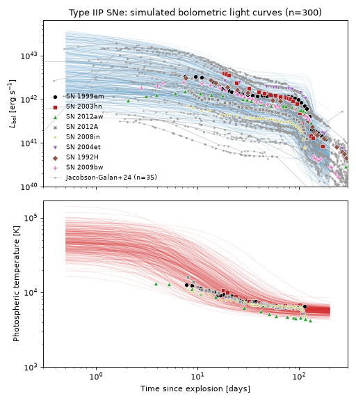
UV Calibration
The plots below overlay the Swift/UVOT UVW1 (2600 Å) and UVW2 (1928 Å) light curves of Type IIP supernovae from the Swift Optical/Ultraviolet Supernova Archive (SOUSA) on 100 random draws from the priors above, integrated through the corresponding UVOT transmission curve from the SVO Filter Profile Service. Both are shown as \(\nu L_\nu\) in the observed band with no K-correction. Archive supernovae are drawn at random, and the legend gives how many are shown. Only those with an estimated explosion date (black) are timed from explosion; the rest (grey) are timed from discovery, so they sit to the left of where the model places the same phase, by an amount that differs from event to event.
The cooling-law parameters T_floor, t_T and k_T were fit against the UVW1 light curves (see the SED
Model above), and the line-blanketing parameters are those of Type Ia, unchanged. 11 Type IIP supernovae have at
least four UVW1 detections, and 9 have at least four UVW2 detections.
(Source code, png, hires.png, pdf)


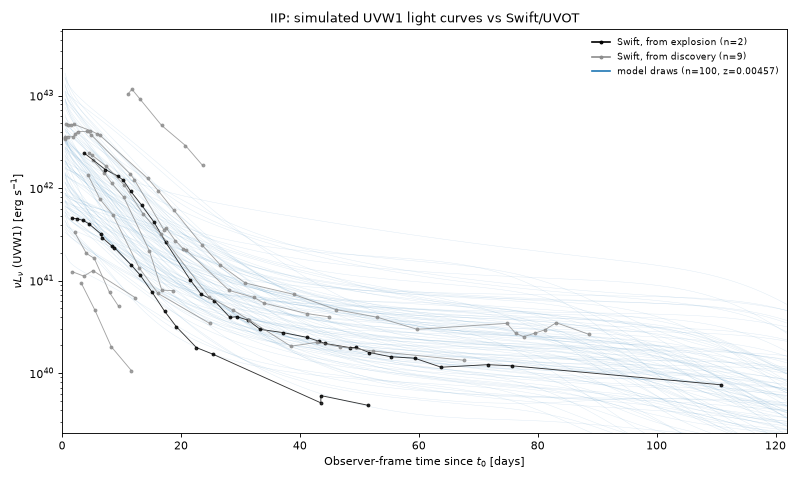
(Source code, png, hires.png, pdf)


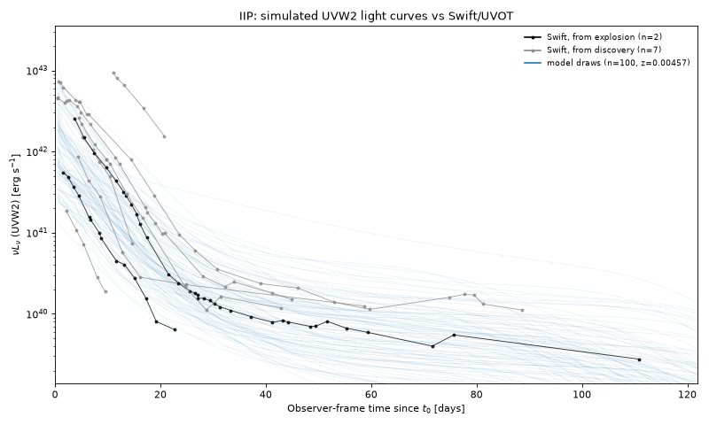
Observability Summary
The plots below show how the redshift limit follows from the SED. We draw 1000 sets of parameters from the priors above and evaluate each of them across a grid of redshifts, in the UVEX FUV and NUV bands, over the whole rest-frame light curve. The left panel shows each draw’s peak apparent AB magnitude, in whichever band is brighter, against redshift: a draw is detectable out to the redshift where its line crosses the UVEX 1 Dwell limit of \(m<24.5\). The right panel shows the redshift beyond which, with 95% confidence, at most 1% of the population is detectable, as a function of the magnitude limit. The redshift limit adopted above, \(z=0.95\), is its value at \(m=24.5\), rounded up and derived on a finer grid than this plot’s.
The limit bounds the fraction of the population that is detectable beyond it, not the fraction of detected events, and it does not include Milky Way extinction or sky position.
(Source code, png, hires.png, pdf)


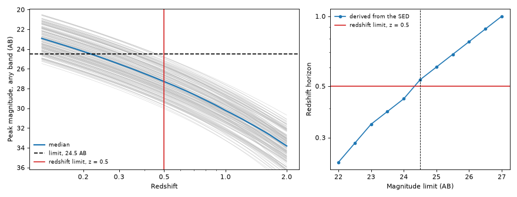
The anticipated rate detectable by UVEX at these limits is as follows, assuming that any event above the \(m<24.5\) limit is detectable, and that the population is isotropic and homogeneous in comoving volume out to its redshift limit:
(Source code, png, hires.png, pdf)


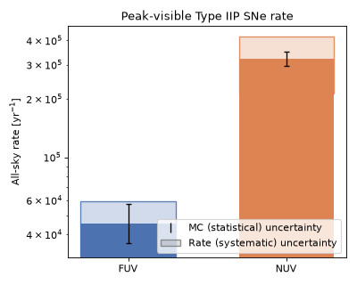
Implemented by TypeIIPExcessSNe, pairing
TypeIIPExcessSED with the rate/duration
metadata described below. IXF/GGI-like: a bright, hot, fast early excess on top of the same
ordinary Type IIP evolution, attributed to shock breakout through and/or collisional heating
of close circumstellar material.
Quick Facts
Quantity |
Value |
Source |
Notes |
|---|---|---|---|
Rate |
30% of the Type IIP rate (14.6% of \(R_\mathrm{CC}(z)\)) |
Bruch et al.[9] |
Reflects the high incidence of early CSM-interaction signatures found among Type II
SNe (ZTF). The 30% multiplier has no published uncertainty of its own, so
|
Redshift limit |
\(z = 0.62\) |
– |
Redshift beyond which, with 95% confidence, at most 1% of events drawn from the SED’s priors are brighter than 24.5 AB (the UVEX 1 Dwell limit) in either UVEX band, rounded up. See the observability summary below. |
Duration |
100 days |
– |
Same window as ordinary Type IIP. |
SED Model
TypeIIPExcessSED is a subclass of
TypeIIPSED that keeps the earlier light curve, two
shared-onset exponentials (an early cooling-phase decline onto a constant plateau) plus a switched
radioactive tail,
with logistic switches \(S_0(t) = [1+e^{-(t-t_0)/\tau_\mathrm{rise}}]^{-1}\) and \(S_P(t) = [1+e^{-(t-t_P)/\tau_\mathrm{drop}}]^{-1}\). The logistic rise at \(t_0\) and the bright early cooling-phase peak \(L_\mathrm{pk}\) describe the brighter, faster early phase seen in SN 2023ixf and SN 2024ggi, rather than the smooth, monotonic early decline of ordinary Type IIP SNe.
The temperature law also differs. It is a single-power-law cooling law, describing a hot initial flash (\(T_0 \sim 10^5\) K) that has cooled by \(\sim1\) d, plus a reheating bump that reproduces the rise of the photospheric temperature to \(\sim2\times10^4\) K at \(\sim3\) d seen in both objects:
with \(\tau_b = t_\mathrm{bump}\,\alpha_\mathrm{bump}/\beta_\mathrm{bump}\), so that the bump rises as \(t^{\beta_\mathrm{bump}}\), peaks at exactly \(t_\mathrm{bump}\) with height \(\Delta T_\mathrm{bump}\), and decays as \(t^{-\alpha_\mathrm{bump}}\). The temperature is therefore not monotonic: it cools from the flash to a trough of \(\sim1.3\times10^4\) K at \(\sim1\) d, rises to the bump, and cools again.
The blackbody is line-blanketed as for ordinary Type IIP (see the Type IIP tab and the
Type Ia SED), with the same break_frequency of
\(0.75\times10^{15}\) Hz but a weaker suppression, beta = 3.5 instead of 5, tuned against the
Swift/UVOT light curves of SN 2023ixf and SN 2024ggi. The shape is divided by its integral, so
\(L_\mathrm{bol}(t)\) is unchanged.
Parameter priors
Hand-tuned against SN 2023ixf [10] and SN 2024ggi
[11], the only two objects of this kind currently in
test_data/transients. There is no temperature data before
\(\sim0.8\) d, so the flash parameters (T0, tau_T, alpha_T) are set by
expectation. T_floor and the bump parameters come from fits to the two objects
(with beta_bump only bounded below, \(\gtrsim5\)).
Parameter |
Symbol |
Prior |
Notes |
|---|---|---|---|
|
\(t_0\) |
Uniform(0.5 d, 3.5 d) |
Explosion/rise reference epoch. |
|
\(\tau_\mathrm{rise}\) |
Normal(\(\log_{10}(\tau_\mathrm{rise}/\mathrm{d})\); mean=-0.2, \(\sigma\)=0.15) |
Rise timescale (median \(\sim0.63\) d). |
|
\(L_\mathrm{pk}\) |
Normal(\(\log_{10}(L_\mathrm{pk}/\mathrm{erg\,s^{-1}})\); mean=43.3, \(\sigma\)=0.25) |
Early cooling-phase peak luminosity scale (median \(\sim2\times10^{43}\) erg/s). |
|
\(\tau_\mathrm{cool}\) |
Uniform(4 d, 15 d) |
Early cooling-phase decay timescale. |
|
\(L_p\) |
Normal(\(\log_{10}(L_p/\mathrm{erg\,s^{-1}})\); mean=42.2, \(\sigma\)=0.2) |
Plateau luminosity. |
|
\(t_P\) |
Uniform(50 d, 150 d) |
Plateau-end / radioactive-tail-onset epoch. |
|
\(\tau_\mathrm{drop}\) |
Fixed (10.5 d) |
Plateau-end transition width. |
|
\(L_\mathrm{Co}\) |
Normal(\(\log_{10}(L_\mathrm{Co}/\mathrm{erg\,s^{-1}})\); mean=41.5, \(\sigma\)=0.3) |
Radioactive-tail luminosity at |
|
\(\tau_\mathrm{Co}\) |
Fixed (111.4 d) |
Radioactive-tail decay timescale, fixed to the \(^{56}\mathrm{Co}\) e-folding time. |
|
\(T_0\) |
Normal(\(\log_{10}(T_0/\mathrm{K})\); mean=5.0, \(\sigma\)=0.1) |
Temperature at \(t=0\) (median \(10^5\) K), the hot flash. Not constrained by data. |
|
\(T_\mathrm{floor}\) |
Normal(\(\log_{10}(T_\mathrm{floor}/\mathrm{K})\); mean=3.69, \(\sigma\)=0.06) |
Late-time temperature (median \(4.9\times10^3\) K). |
|
\(\tau_T\) |
Uniform(0.15 d, 0.3 d) |
Cooling timescale of the initial flash. |
|
\(\alpha_T\) |
Uniform(1.8, 2.4) |
Cooling power-law index of the initial flash. |
|
\(\Delta T_\mathrm{bump}\) |
Normal(\(\log_{10}(\Delta T_\mathrm{bump}/\mathrm{K})\); mean=4.19, \(\sigma\)=0.08) |
Peak temperature excess of the reheating bump (median \(1.55\times10^4\) K). |
|
\(t_\mathrm{bump}\) |
Uniform(2.4 d, 3.6 d) |
Epoch of the bump’s peak. |
|
\(\beta_\mathrm{bump}\) |
Uniform(5, 12) |
Rise power-law index of the bump. |
|
\(\alpha_\mathrm{bump}\) |
Uniform(1.6, 2.4) |
Decay power-law index of the bump. |
|
\(\nu_\mathrm{break}\) |
Fixed (\(0.75\times10^{15}\) Hz) |
Frequency blueward of which line blanketing suppresses the flux. The Type Ia value. |
|
\(\beta\) |
Fixed (3.5) |
Power-law index of the line-blanketing suppression. Weaker than the ordinary Type IIP value of 5. |
Simulated Light Curves
The plot below draws 300 random parameter realizations from the priors above and shows the resulting bolometric light curves and photospheric temperatures, overlaid with the observed light curves and temperatures of SN 2023ixf [10] and SN 2024ggi [11].
(Source code, png, hires.png, pdf)


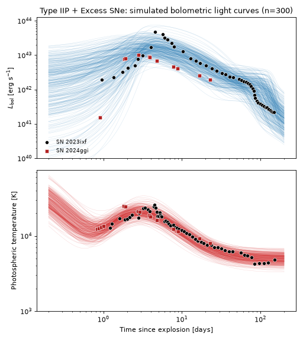
UV Calibration
The plots below overlay the Swift/UVOT UVW1 (2600 Å) and UVW2 (1928 Å) light curves of Type IIP + Excess supernovae (SN 2023ixf and SN 2024ggi) from the Swift Optical/Ultraviolet Supernova Archive (SOUSA) on 100 random draws from the priors above, integrated through the corresponding UVOT transmission curve from the SVO Filter Profile Service. Both are shown as \(\nu L_\nu\) in the observed band with no K-correction. Archive supernovae are drawn at random, and the legend gives how many are shown. Only those with an estimated explosion date (black) are timed from explosion; the rest (grey) are timed from discovery, so they sit to the left of where the model places the same phase, by an amount that differs from event to event.
These two supernovae are the whole Swift sample for this population, and the whole sample the SED was tuned against, so the comparison is not independent of the priors.
(Source code, png, hires.png, pdf)


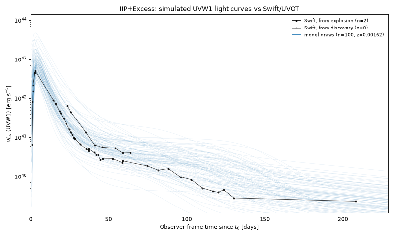
(Source code, png, hires.png, pdf)


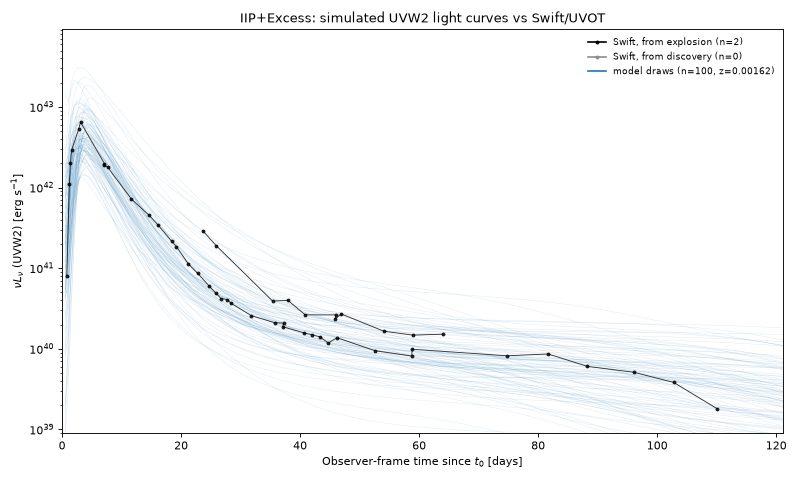
Observability Summary
The plots below show how the redshift limit follows from the SED. We draw 1000 sets of parameters from the priors above and evaluate each of them across a grid of redshifts, in the UVEX FUV and NUV bands, over the whole rest-frame light curve. The left panel shows each draw’s peak apparent AB magnitude, in whichever band is brighter, against redshift: a draw is detectable out to the redshift where its line crosses the UVEX 1 Dwell limit of \(m<24.5\). The right panel shows the redshift beyond which, with 95% confidence, at most 1% of the population is detectable, as a function of the magnitude limit. The redshift limit adopted above, \(z=1.1\), is its value at \(m=24.5\), rounded up and derived on a finer grid than this plot’s.
The limit bounds the fraction of the population that is detectable beyond it, not the fraction of detected events, and it does not include Milky Way extinction or sky position.
(Source code, png, hires.png, pdf)


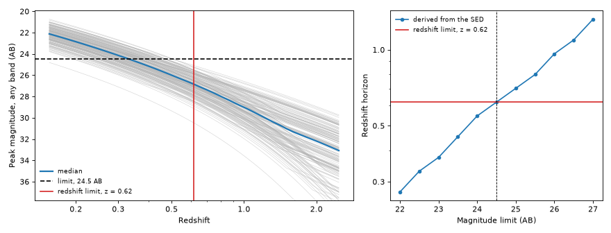
The anticipated rate detectable by UVEX at these limits is as follows, assuming that any event above the \(m<24.5\) limit is detectable, and that the population is isotropic and homogeneous in comoving volume out to its redshift limit:
(Source code, png, hires.png, pdf)


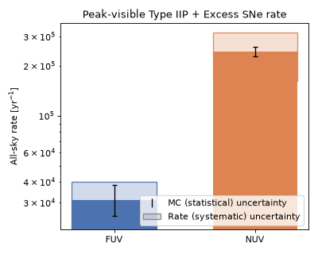
Type IIb supernovae are core-collapse explosions of massive stars that have been stripped of most,
but not all, of their hydrogen envelope. Many show a double-peaked light curve: an early, hours-
to-days-long flash powered by the shock heating and subsequent cooling of the extended envelope,
followed – after a dip – by a broader, weeks-long peak powered by radioactive
\(^{56}\mathrm{Ni}\) decay, the same mechanism that powers most other core-collapse SN light
curves. Others show only the single, radioactively powered peak, with no resolved early bump.
Where ShockCoolingIIb models only the shock-cooling
component, cut at the edge of its regime of validity, this population adds the radioactively powered
main peak and evaluates the shock cooling at every epoch, so a single SED spans the whole light curve.
This population is implemented by
TypeIIbSNe, pairing
TypeIIbSED with the rate/duration metadata
described below.
Note
The shock cooling priors are those of MoragShockCoolingSED
and the nickel priors are those of the Type Ib SED
(TypeIbSED). Neither is a fit to Type IIb events, and
the duration below was derived for an earlier, phenomenological Type IIb SED. It needs to be
recomputed.
Quick Facts
Quantity |
Value |
Source |
Notes |
|---|---|---|---|
Rate |
\(R_\mathrm{CC}(z) = k\,\psi_\mathrm{UV}(z)\); Type IIb 10.3% of \(R_\mathrm{CC}(z)\) |
Strolger et al.[1], Madau and Dickinson[2], Shivvers et al.[4] |
Tracks the cosmic star-formation history. Shivvers et al.[4] find IIb is
\(34.0\pm11.1\%\) of the stripped-envelope (SESNe) rate, which is itself
\(30.4^{+5.0}_{-4.9}\%\) of the total core-collapse rate, so the Type IIb fraction
of the CC rate is \(0.340\times0.304=0.103\). Combined in quadrature with
Strolger et al.[1]’s \(+27\%/-31\%\) normalization uncertainty, this gives
|
Redshift limit |
\(z = 1.8\) |
– |
Redshift beyond which, with 95% confidence, at most 1% of events drawn from the SED’s priors are brighter than 24.5 AB (the UVEX 1 Dwell limit) in either UVEX band, rounded up. Only epochs after 0.1 d are considered, because the shock cooling luminosity grows without bound toward \(t\to0\). See the observability summary below. |
Duration |
200 days |
– |
Long enough to cover the shock-cooling peak (where present), the dip, the radioactive main
peak, and its subsequent decline – unlike
|
SED Model
TypeIIbSED adds two emission components,
The first is the full shock cooling SED of Morag et al.[12]
(MoragShockCoolingSED), which dominates the first
days. It is evaluated at every epoch, without the cut at the edges of that paper’s regime of
validity, so it does not switch off after a day or two and the luminosity is not zero through the
trough. The price is that the formulas are not valid before \(t_\mathrm{min}\), where the
luminosity grows without bound toward \(t \to 0\). The second is the line-blanketed Arnett
nickel light curve of TypeIbSED, which produces the
main peak at about 20 days. Together they give a luminous decline after breakout, a trough, and a
rise to the nickel peak. The two components are independent, so nothing ties the envelope mass of the
shock cooling to the ejecta mass of the nickel component.
Parameter priors
The shock cooling parameters have the priors of
MoragShockCoolingSED, and the nickel and
line-blanketing parameters those of TypeIbSED, except
M_Ni and beta. The line blanketing applies to the nickel component only: the shock cooling
component is an unblanketed blackbody.
Parameter |
Symbol |
Prior |
Notes |
|---|---|---|---|
|
\(v_*\) |
LogNormal(\(\sigma\)=0.35) around \(6.3\times10^8\) cm/s |
Scale velocity of the shock near the stellar surface. |
|
\(R\) |
LogNormal(\(\sigma\)=0.85) around \(6\times10^{12}\) cm |
Progenitor stellar radius. |
|
\(\kappa\) |
Fixed (0.34 cm2 g-1) |
Electron-scattering opacity of the shock cooling. |
|
\(M_E\) |
LogNormal(\(\sigma\)=1.0) around \(0.05\ M_\odot\) |
Hydrogen-rich envelope mass. |
|
\(M_C\) |
LogNormal(\(\sigma\)=0.35) around \(2.8\ M_\odot\) |
Core mass. |
|
\(M_\mathrm{Ni}\) |
TruncatedNormal(mean=0.1, \(\sigma\)=0.07, bounds 0.01 to 0.4 \(M_\odot\)) |
Nickel-56 mass. Lower than the Type Ib value. |
|
\(M_\mathrm{ej}\) |
TruncatedNormal(mean=2.6, \(\sigma\)=1.1, bounds 0.1 to 8 \(M_\odot\)) |
Ejecta mass. |
|
\(v_\mathrm{ej}\) |
TruncatedNormal(mean=9.9, \(\sigma\)=1.4, bounds 4 to 16; units of \(10^3\) km/s) |
Constant ejecta velocity. |
|
\(\kappa\) |
Fixed (0.06 cm2 g-1) |
Grey optical opacity of the ejecta. |
|
\(\kappa_\gamma\) |
Fixed (0.04 cm2 g-1) |
Opacity to high-energy photons. |
|
\(T_\mathrm{floor}\) |
TruncatedNormal(mean=5000 K, \(\sigma\)=1000 K, bounds 3000 K to 10000 K) |
Minimum photospheric temperature of the nickel component. |
|
\(\nu_\mathrm{break}\) |
Fixed (\(0.75\times10^{15}\) Hz) |
Frequency blueward of which line blanketing suppresses the nickel component. |
|
\(\beta\) |
Fixed (4.0) |
Power-law index of the line-blanketing suppression. Weaker than the Type Ib value of 5. |
Simulated Light Curves
The plot below draws 300 random parameter realizations from the priors above and shows the resulting bolometric light curves and photospheric temperatures, overlaid with the observed light curves and temperatures of several Type IIb SNe [13][14][15][16][17][18]. The spread shows the early shock cooling decline, the trough and the nickel peak, with the depth of the trough set by the shock cooling parameters. The shock cooling is evaluated outside its regime of validity at the earliest times, so the very early luminosity of the brightest draws should not be read as a prediction.
(Source code, png, hires.png, pdf)


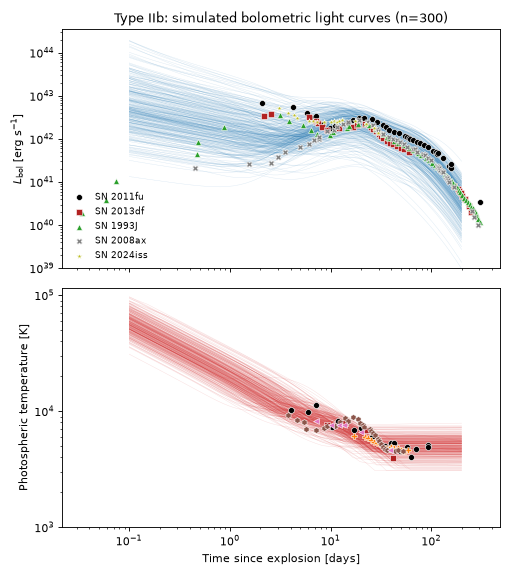
UV Calibration
The plots below overlay the Swift/UVOT UVW1 (2600 Å) and UVW2 (1928 Å) light curves of Type IIb supernovae from the Swift Optical/Ultraviolet Supernova Archive (SOUSA) on 100 random draws from the priors above, integrated through the corresponding UVOT transmission curve from the SVO Filter Profile Service. Both are shown as \(\nu L_\nu\) in the observed band with no K-correction. Archive supernovae are drawn at random, and the legend gives how many are shown. Only those with an estimated explosion date (black) are timed from explosion; the rest (grey) are timed from discovery, so they sit to the left of where the model places the same phase, by an amount that differs from event to event.
Only the nickel component of this SED is line-blanketed (beta = 4), so the UV in the first days is
set by the unblanketed shock cooling component. 7 Type IIb supernovae have at least four UVW1 detections, and
6 have at least four UVW2 detections.
(Source code, png, hires.png, pdf)


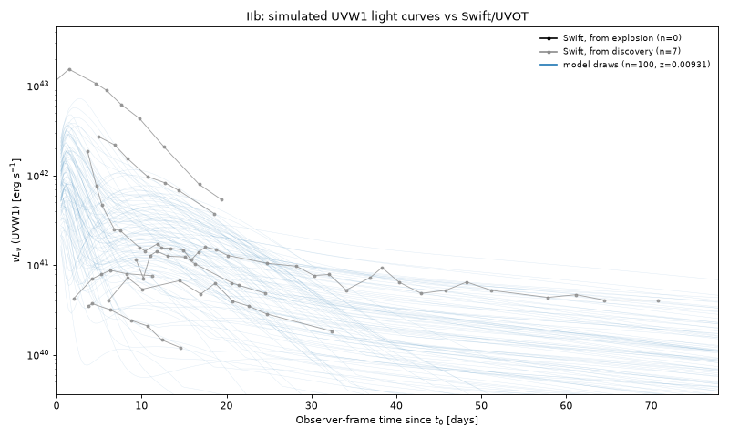
(Source code, png, hires.png, pdf)


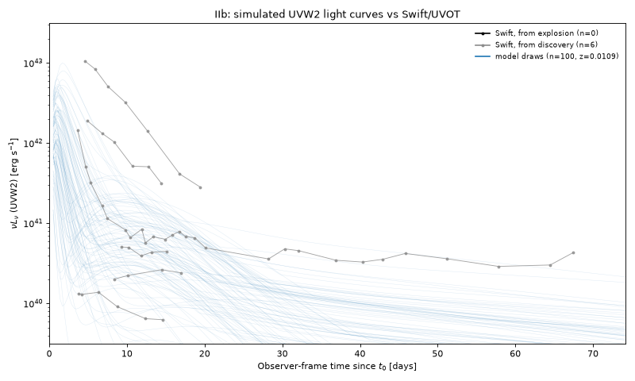
Observability Summary
The plots below show how the redshift limit follows from the SED. We draw 1000 sets of parameters from the priors above and evaluate each of them across a grid of redshifts, in the UVEX FUV and NUV bands, over the whole rest-frame light curve. The left panel shows each draw’s peak apparent AB magnitude, in whichever band is brighter, against redshift: a draw is detectable out to the redshift where its line crosses the UVEX 1 Dwell limit of \(m<24.5\). The right panel shows the redshift beyond which, with 95% confidence, at most 1% of the population is detectable, as a function of the magnitude limit. The redshift limit adopted above, \(z=1.8\), is its value at \(m=24.5\), rounded up and derived on a finer grid than this plot’s. Epochs earlier than 0.1 d are excluded from the light curve, because the shock cooling luminosity of this SED grows without bound toward \(t\to0\).
The limit bounds the fraction of the population that is detectable beyond it, not the fraction of detected events, and it does not include Milky Way extinction or sky position.
(Source code, png, hires.png, pdf)


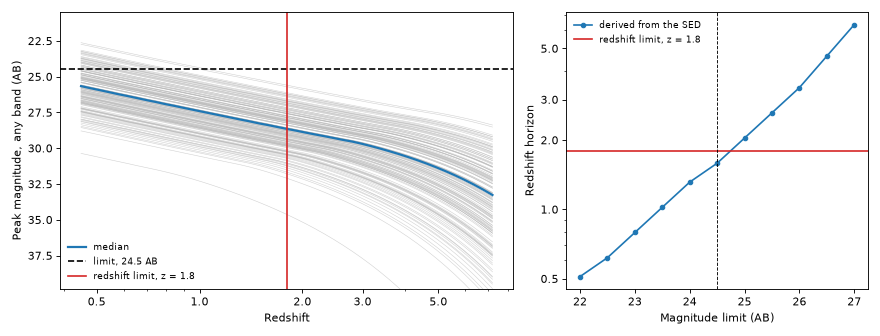
The anticipated rate detectable by UVEX at this limit is as follows, assuming that any event above the \(m<24.5\) limit is detectable, and that the population is isotropic and homogeneous in comoving volume out to its redshift limit:
(Source code, png, hires.png, pdf)


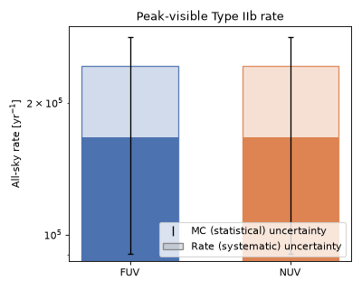